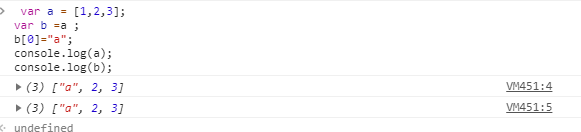

分享人：许恒倩
目录
1.背景介绍
2.知识剖析
3.常见问题
4.解决方案
5.编码实战
6.扩展思考
7.参考文献
8.更多讨论
基本类型：
5种基本数据类型Undefined、Null、Boolean、Number 和 String，
变量是直接按值存放的，存放在栈内存中的简单数据段，可以直接访问。
JavaScript存储对象都是存地址的，所以浅拷贝会导致 obj1 和obj2 指向同一块内存地址。 改变了其中一个对象的内容，就是在原来的内存上做修改会导致拷贝对象和源对象都发生改变， 而深拷贝是开辟一块新的内存地址，将原对象的各个属性逐个复制进去。 对拷贝对象和源对象各自的操作互不影响。
JS数组的浅拷贝
简单的赋值就是浅拷贝。因为对象和数组在赋值的时候都是引用传递。赋值的时候只是传递一个指针。

JS数组的深拷贝
slice()：
语法：arrayObject.slice(start,end)
slice() 方法可从已有的数组中返回选定的元素（请注意，该方法并不会修改数组，而是返回一个子数组）。
【语法】arrayObject.concat(arrayX,arrayy,......,arrayN)
【参数】arrayX--必需：该参数可以是具体的值，也可以是数组对象。可以是空值，可以是任意多个。
【说明】 返回一个新的数组。该数组是通过把所有 arrayX 参数添加到 arrayObject 中生成的。如果要进行 concat()操作的参数是数组，那么添加的是数组中的元素，而不是数组。
利用JSON格式
这种方法使用较为简单，可以满足基本的深拷贝需求，而且能够处理JSON格式能表示的所有数据类型， 但是对于正则表达式类型、函数类型等无法进行深拷贝(而且会直接丢失相应的值)。
参考：
javaScript中浅拷贝和深拷贝的实现
$.extend()的深拷贝和浅拷贝详细讲解
感谢大家观看
BY : 许恒倩